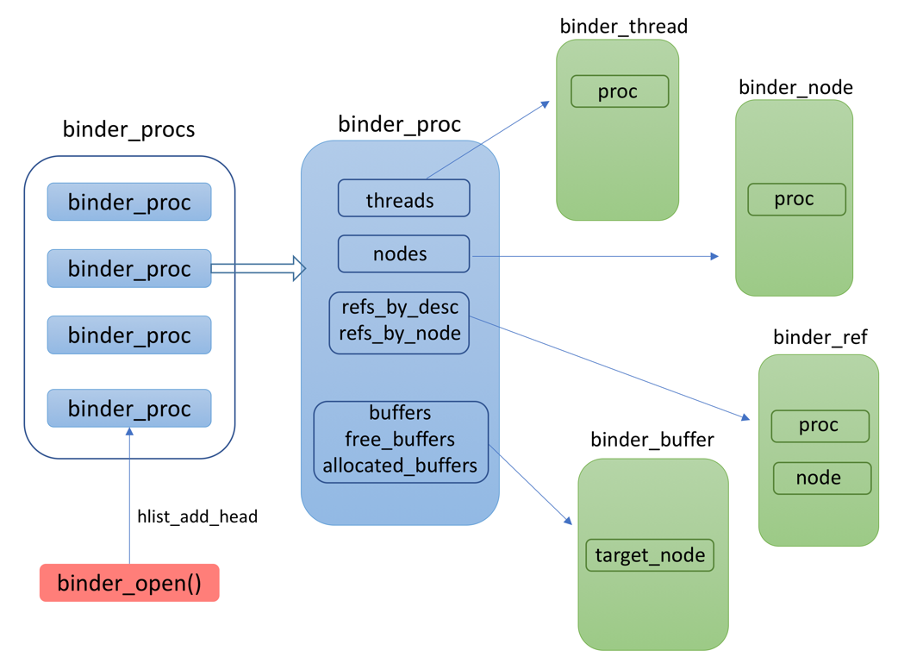
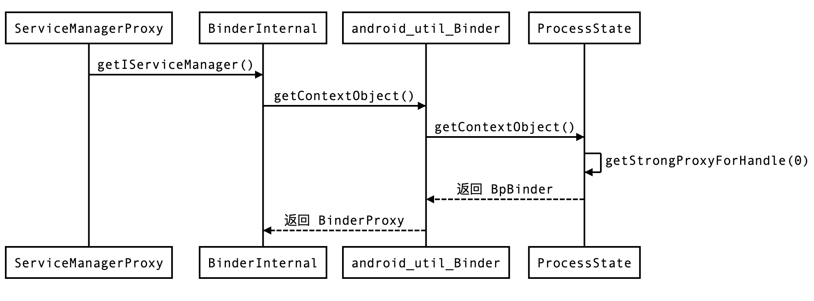
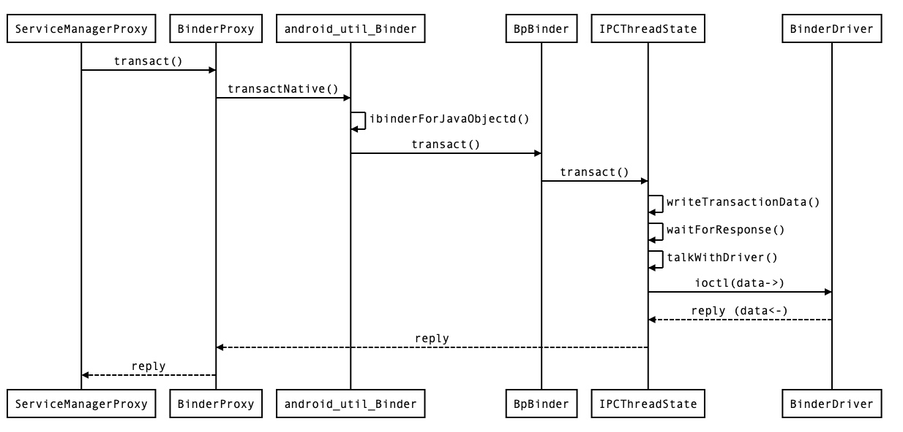

<!DOCTYPE html>
<html>
<head><meta name="generator" content="Hexo 3.9.0">
  <meta charset="utf-8">
  
  <title>细读《深入理解 Android 内核设计思想》（四）Binder 机制 [中] | what is your main focus for today?</title>
  <meta name="viewport" content="width=device-width, initial-scale=1, maximum-scale=1">
  <meta name="description" content="智能指针 binder 驱动中的结构体 ProcessState IPCThreadState BpBinder BinderProxy ServiceManager getService 流程">
<meta name="keywords" content="读书笔记,binder,ProcessState,IPCThreadState,BpBinder,BinderProxy">
<meta property="og:type" content="article">
<meta property="og:title" content="细读《深入理解 Android 内核设计思想》（四）Binder 机制 [中]">
<meta property="og:url" content="http://yhaowa.gitee.io/yhaowa/a8eae25c/index.html">
<meta property="og:site_name" content="what is your main focus for today?">
<meta property="og:description" content="智能指针 binder 驱动中的结构体 ProcessState IPCThreadState BpBinder BinderProxy ServiceManager getService 流程">
<meta property="og:locale" content="zh-CN">
<meta property="og:image" content="http://yhaowa.gitee.io/yhaowa/img/binder_proc.png">
<meta property="og:image" content="http://yhaowa.gitee.io/yhaowa/img/BinderProxy.png">
<meta property="og:image" content="http://yhaowa.gitee.io/yhaowa/img/transact.jpg">
<meta property="og:updated_time" content="2020-12-06T09:18:58.304Z">
<meta name="twitter:card" content="summary">
<meta name="twitter:title" content="细读《深入理解 Android 内核设计思想》（四）Binder 机制 [中]">
<meta name="twitter:description" content="智能指针 binder 驱动中的结构体 ProcessState IPCThreadState BpBinder BinderProxy ServiceManager getService 流程">
<meta name="twitter:image" content="http://yhaowa.gitee.io/yhaowa/img/binder_proc.png">
  
    <link rel="alternative" href="/atom.xml" title="what is your main focus for today?" type="application/atom+xml">
  
  
    <link rel="icon" href="/favicon.png">
  
  <link rel="stylesheet" href="/yhaowa/css/style.css">
  <!--[if lt IE 9]><script src="//cdnjs.cloudflare.com/ajax/libs/html5shiv/3.7/html5shiv.min.js"></script><![endif]-->
  
</head></html>
<body>
<div id="container">
  <div id="wrap">
    <header id="header">
  <div id="banner"></div>
  <div id="header-outer" class="outer">
    <div id="header-title" class="inner">
      <h1 id="logo-wrap">
        <a href="/yhaowa/" id="logo">what is your main focus for today?</a>
      </h1>
      
    </div>
    <div id="header-inner" class="inner">
      <nav id="main-nav">
        <a id="main-nav-toggle" class="nav-icon"></a>
        
          <a class="main-nav-link" href="/yhaowa/">首页</a>
        
          <a class="main-nav-link" href="/yhaowa/archives">归档</a>
        
      </nav>
      <nav id="sub-nav">
        
          <a id="nav-rss-link" class="nav-icon" href="/atom.xml" title="RSS Feed"></a>
        
        <a id="nav-search-btn" class="nav-icon" title="Search"></a>
      </nav>
      <div id="search-form-wrap">
        <form action="//www.baidu.com/baidu" method="get" accept-charset="utf-8" class="search-form">
          <input type="search" name="word" maxlength="20" class="search-form-input" placeholder="Search">
          <input type="submit" value="" class="search-form-submit">
          <input name=tn type=hidden value="bds">
          <input name=cl type=hidden value="3">
          <input name=ct type=hidden value="2097152">
          <input type="hidden" name="si" value="yhaowa.gitee.io/yhaowa">
        </form>
      </div>
    </div>
  </div>
</header>
    <div class="outer">
      <section id="main"><article id="post-细读《深入理解-Android-内核设计思想》（四）Binder-机制-中" class="article article-type-post" itemscope itemprop="blogPost">
  <div class="article-meta">
    <a href="/yhaowa/a8eae25c/" class="article-date">
  <time datetime="2020-04-23T15:24:46.000Z" itemprop="datePublished">2020-04-23</time>
</a>
    
  <div class="article-category">
    <a class="article-category-link" href="/yhaowa/categories/Framework/">Framework</a>
  </div>

  </div>
  <div class="article-inner">
    
    
      <header class="article-header">
        
  
    <h1 class="article-title" itemprop="name">
      细读《深入理解 Android 内核设计思想》（四）Binder 机制 [中]
    </h1>
  

      </header>
    
    <div class="article-entry" itemprop="articleBody">
      
        <blockquote>
<ol>
<li>智能指针</li>
<li>binder 驱动中的结构体</li>
<li>ProcessState</li>
<li>IPCThreadState</li>
<li>BpBinder</li>
<li>BinderProxy</li>
<li>ServiceManager getService 流程</li>
</ol>
</blockquote>
<a id="more"></a>
<p><em>对冗余挑拣重点，对重点深入补充，输出结构清晰的精简版</em></p>
<h2 id="智能指针"><a href="#智能指针" class="headerlink" title="智能指针"></a>智能指针</h2><p>在 binder 相关源码可以看到 sp、wp 类型的引用：<br><figure class="highlight objectivec"><table><tr><td class="gutter"><pre><span class="line">1</span><br><span class="line">2</span><br><span class="line">3</span><br></pre></td><td class="code"><pre><span class="line">sp&lt;IBinder&gt; result = new BpBinder(handle);</span><br><span class="line"></span><br><span class="line">wp&lt;IBinder&gt; result = new BpBinder(handle);</span><br></pre></td></tr></table></figure></p>
<p>sp 即 strong pointer 强指针引用；wp 是 weak pointer 弱指针引用。在 Java 中我们不用关心对象的销毁及内存释放，GC 机制会自动辨别回收无用对象，而<strong>智能指针</strong>就是 native 层一个小型的 GC 实现。</p>
<p>智能指针以引用计数的方式来标识无用对象，使用智能指针的对象需继承自 RefBase，RefBase 中维护了此对象被强引用数量和弱引用数量。</p>
<p>强引用 sp 重载了 “=” 运算符，在引用其他对象时将强引用计数 +1，在 sp 析构函数中将强引用计数 -1，当强引用计数减至 0 时销毁引用的对象。这样就实现了对象的自动释放，但若只靠强引用计数方式，会存在循环引用的问题，导致对象永远无法被释放，弱引用就是专门用来解决循环引用问题的。</p>
<p>若在 A 中强引用了 B，那 B 需要引用 A 时就使用弱引用，当判断对象是否无用时仅考虑强引用计数是否为 0，不关心弱引用计数的数量。当 B 要访问 A 时，若发现 A 已经被销毁，那就表示 A 已经不存在了，需要进行重新创建等其他操作。</p>
<p>RefBase 提供了 extendObjectLifetime() 方法，可以用来设置引用计数器的规则，不同规则对删除目标对象的时机判断也是不一样的，包括以下三种规则：</p>
<p><strong>OBJECT_LIFETIME_STRONG</strong>：只有在这个对象内存空间中的强计数器值为 0 的时候才会销毁对象）</p>
<p><strong>OBJECT_LIFETIME_WEAK</strong>：只有在这个对象内存空间中的强计数器和弱计数器的值都为 0 的时候才会销毁对象</p>
<p><strong>OBJECT_LIFETIME_MASK</strong>：不管这两个计数器是不是都为 0，都不销毁对象，即与一般指针无异，还是要自己手动去释放对象</p>
<h2 id="binder-驱动相关的结构体"><a href="#binder-驱动相关的结构体" class="headerlink" title="binder 驱动相关的结构体"></a>binder 驱动相关的结构体</h2><table>
<thead>
<tr>
<th>结构体</th>
<th>说明</th>
</tr>
</thead>
<tbody>
<tr>
<td>binder_proc</td>
<td>描述使用 binder 的进程，当调用 binder_open 函数时会创建</td>
</tr>
<tr>
<td>binder_thread</td>
<td>描述使用 binder 的线程，当调用 binder_ioctl 函数时会创建</td>
</tr>
<tr>
<td>binder_node</td>
<td>描述 binder 实体节点，对应于一个 serve，即用户态的 BpBinder 对象</td>
</tr>
<tr>
<td>binder_ref</td>
<td>描述对 binder 实体节点的引用，关联到一个 binder_node</td>
</tr>
<tr>
<td>binder_buffer</td>
<td>描述 binder 通信过程中存储数据的Buffer</td>
</tr>
<tr>
<td>binder_work</td>
<td>描述一个 binder 任务</td>
</tr>
<tr>
<td>binder_transaction</td>
<td>描述一次 binder 任务相关的数据信息</td>
</tr>
<tr>
<td>binder_ref_death</td>
<td>描述 binder_node 即 binder server 的死亡信息</td>
</tr>
</tbody>
</table>
<p>其中主要结构体引用关系如下：</p>
<p></p>
<p>以上结构体仅存在于 binder 驱动内部，还有一类结构体是与用户态共用的：</p>
<table>
<thead>
<tr>
<th>结构体</th>
<th>说明</th>
</tr>
</thead>
<tbody>
<tr>
<td>flat_binder_object</td>
<td>描述在 binder IPC 过程传递的对象</td>
</tr>
<tr>
<td>binder_write_read</td>
<td>描述存储读写操作的数据</td>
</tr>
<tr>
<td>binder_version</td>
<td>描述 binder 的版本号</td>
</tr>
<tr>
<td>transaction_flags</td>
<td>描述事务的 flag，例如是否是异步请求，是否支持 fd</td>
</tr>
<tr>
<td>binder_transaction_data</td>
<td>描述一次事务的相关数据</td>
</tr>
</tbody>
</table>
<p><strong>参考： <a href="http://www.codeceo.com/article/android-binder-part-one.html" target="_blank" rel="noopener">http://www.codeceo.com/article/android-binder-part-one.html</a></strong></p>
<h2 id="ProcessState"><a href="#ProcessState" class="headerlink" title="ProcessState"></a>ProcessState</h2><p>ProcessState 专门管理每个应用进程的 Binder 操作，同一个进程中只有一个 ProcessState 实例存在，且只在 ProcessState 对象创建时才打开 Binder 设备以及内存映射。相关代码如下：<br><figure class="highlight objectivec"><table><tr><td class="gutter"><pre><span class="line">1</span><br><span class="line">2</span><br><span class="line">3</span><br><span class="line">4</span><br><span class="line">5</span><br><span class="line">6</span><br><span class="line">7</span><br><span class="line">8</span><br><span class="line">9</span><br></pre></td><td class="code"><pre><span class="line"><span class="comment">///frameworks/native/libs/binder/ProcessState.cpp</span></span><br><span class="line">sp&lt;ProcessState&gt; ProcessState::<span class="keyword">self</span>()&#123;</span><br><span class="line">    Mutex::Autolock _l(gProcessMutex);</span><br><span class="line">    <span class="keyword">if</span> (gProcess != <span class="literal">NULL</span>) &#123; <span class="comment">//如果创建过 ProcessState 就直接返回</span></span><br><span class="line">        <span class="keyword">return</span> gProcess;</span><br><span class="line">    &#125;</span><br><span class="line">    gProcess = new ProcessState;</span><br><span class="line">    <span class="keyword">return</span> gProcess;</span><br><span class="line">&#125;</span><br></pre></td></tr></table></figure></p>
<p>外部统一通过 ProcessState::self() 方法获取 ProcessState，以此保证 ProcessState 的进程单例，ProcessState 的构造函数如下：<br><figure class="highlight objectivec"><table><tr><td class="gutter"><pre><span class="line">1</span><br><span class="line">2</span><br><span class="line">3</span><br><span class="line">4</span><br><span class="line">5</span><br><span class="line">6</span><br><span class="line">7</span><br><span class="line">8</span><br><span class="line">9</span><br><span class="line">10</span><br><span class="line">11</span><br><span class="line">12</span><br><span class="line">13</span><br><span class="line">14</span><br><span class="line">15</span><br><span class="line">16</span><br><span class="line">17</span><br><span class="line">18</span><br><span class="line">19</span><br><span class="line">20</span><br><span class="line">21</span><br><span class="line">22</span><br><span class="line">23</span><br><span class="line">24</span><br><span class="line">25</span><br><span class="line">26</span><br></pre></td><td class="code"><pre><span class="line"><span class="meta">#<span class="meta-keyword">define</span> BINDER_VM_SIZE ((1*1024*1024) - (4096 *2))</span></span><br><span class="line"><span class="meta">#<span class="meta-keyword">define</span> DEFAULT_MAX_BINDER_THREADS 15</span></span><br><span class="line"></span><br><span class="line">ProcessState::ProcessState()</span><br><span class="line">    : mDriverFD(open_driver()) <span class="comment">//打开 binder 设备</span></span><br><span class="line">    , mVMStart(MAP_FAILED) <span class="comment">//初始化为 MAP_FAILED，映射成功后会变更</span></span><br><span class="line">    , mThreadCountLock(PTHREAD_MUTEX_INITIALIZER)</span><br><span class="line">    , mThreadCountDecrement(PTHREAD_COND_INITIALIZER)</span><br><span class="line">    , mExecutingThreadsCount(<span class="number">0</span>)</span><br><span class="line">    , mMaxThreads(DEFAULT_MAX_BINDER_THREADS) <span class="comment">//binder 线程最大数量</span></span><br><span class="line">    , mStarvationStartTimeMs(<span class="number">0</span>)</span><br><span class="line">    , mManagesContexts(<span class="literal">false</span>)</span><br><span class="line">    , mBinderContextCheckFunc(<span class="literal">NULL</span>)</span><br><span class="line">    , mBinderContextUserData(<span class="literal">NULL</span>)</span><br><span class="line">    , mThreadPoolStarted(<span class="literal">false</span>)</span><br><span class="line">    , mThreadPoolSeq(<span class="number">1</span>)&#123;</span><br><span class="line">       <span class="keyword">if</span> (mDriverFD &gt;= <span class="number">0</span>) &#123; <span class="comment">//已经成功打开 binder 驱动设备</span></span><br><span class="line">           <span class="comment">// 将应用进程一块虚拟内存空间与 binder 驱动映射，在此内存块上进行数据通信</span></span><br><span class="line">           mVMStart = mmap(<span class="number">0</span>, BINDER_VM_SIZE, PROT_READ, MAP_PRIVATE | MAP_NORESERVE, mDriverFD, <span class="number">0</span>);</span><br><span class="line">           <span class="keyword">if</span> (mVMStart == MAP_FAILED) &#123; <span class="comment">//映射失败处理</span></span><br><span class="line">               ALOGE(<span class="string">"Using /dev/binder failed: unable to mmap transaction memory.\n"</span>);</span><br><span class="line">               close(mDriverFD);</span><br><span class="line">               mDriverFD = <span class="number">-1</span>;</span><br><span class="line">           &#125;</span><br><span class="line">       &#125;</span><br><span class="line">&#125;</span><br></pre></td></tr></table></figure></p>
<p>ProcessState 的构造函数初始化了一些重要的变量，包括调用 open_driver() 打开 binder 设备，初始化 binder 线程最大数量，将 BINDER_VM_SIZE (接近 1M ) 的内存与 binder 驱动 mmap.</p>
<p>除了 ProcessState 的初始化，ProcessState 中还有一些比较重要的方法，比如 getStrongProxyForHandle()、getWeakProxyForHandle() 等，可以通过 handle 值获取对应 IBinder 对象，getWeakProxyForHandle() 方法如下：<br><figure class="highlight objectivec"><table><tr><td class="gutter"><pre><span class="line">1</span><br><span class="line">2</span><br><span class="line">3</span><br><span class="line">4</span><br><span class="line">5</span><br><span class="line">6</span><br><span class="line">7</span><br><span class="line">8</span><br><span class="line">9</span><br><span class="line">10</span><br><span class="line">11</span><br><span class="line">12</span><br><span class="line">13</span><br><span class="line">14</span><br><span class="line">15</span><br><span class="line">16</span><br><span class="line">17</span><br><span class="line">18</span><br><span class="line">19</span><br></pre></td><td class="code"><pre><span class="line">wp&lt;IBinder&gt; ProcessState::getWeakProxyForHandle(int32_t handle)&#123;</span><br><span class="line">    wp&lt;IBinder&gt; result;</span><br><span class="line">    AutoMutex _l(mLock);</span><br><span class="line">    <span class="comment">//查找 IBinder 是否已经创建过 </span></span><br><span class="line">    handle_entry* e = lookupHandleLocked(handle);</span><br><span class="line">    <span class="keyword">if</span> (e != <span class="literal">NULL</span>) &#123;</span><br><span class="line">        IBinder* b = e-&gt;binder;</span><br><span class="line">        <span class="keyword">if</span> (b == <span class="literal">NULL</span> || !e-&gt;refs-&gt;attemptIncWeak(<span class="keyword">this</span>)) &#123;</span><br><span class="line">            b = new BpBinder(handle); <span class="comment">//没创建过就新建 BpBinder</span></span><br><span class="line">            result = b;</span><br><span class="line">            e-&gt;binder = b;</span><br><span class="line">            <span class="keyword">if</span> (b) e-&gt;refs = b-&gt;getWeakRefs();</span><br><span class="line">        &#125; <span class="keyword">else</span> &#123;</span><br><span class="line">            result = b;</span><br><span class="line">            e-&gt;refs-&gt;decWeak(<span class="keyword">this</span>);</span><br><span class="line">        &#125;</span><br><span class="line">    &#125;</span><br><span class="line">    <span class="keyword">return</span> result;</span><br><span class="line">&#125;</span><br></pre></td></tr></table></figure></p>
<p>lookupHandleLocked() 方法用于查找本进程中是否已经创建过要获取的 IBinder，如果没有获取到，就创建一个，lookupHandleLocked() 内部通过一个 Vector 来存放创建过的 IBinder：<br><figure class="highlight objectivec"><table><tr><td class="gutter"><pre><span class="line">1</span><br><span class="line">2</span><br><span class="line">3</span><br><span class="line">4</span><br><span class="line">5</span><br><span class="line">6</span><br></pre></td><td class="code"><pre><span class="line">Vector&lt;handle_entry&gt; mHandleToObject;</span><br><span class="line"></span><br><span class="line"><span class="keyword">struct</span> handle_entry&#123;</span><br><span class="line">    IBinder* binder;</span><br><span class="line">    RefBase::weakref_type* refs;</span><br><span class="line">&#125;</span><br></pre></td></tr></table></figure></p>
<p>如上代码所示，每个 IBinder 对象通过一个 handle_entry 结构体存放，也就是说，ProcessState 中有一个全局列表来记录所有的 IBinder 对象。</p>
<h2 id="IPCThreadState"><a href="#IPCThreadState" class="headerlink" title="IPCThreadState"></a>IPCThreadState</h2><p>ProcessState 对应于一个进程，是进程内单例，而 IPCThreadState 对应于一个线程，是线程单例(Thread Local)。</p>
<p>ProcessState 中打开了 binder 驱动、进行 mmap 映射，虽然调用了 ioctl() 函数，但主要是一些初始化配置。而具体的 BR_TRANSACTION 等命令都是由 IPCThreadState 负责执行的，当上层传来一个命令，会调用它的 transact 函数，该函数精简后如下：<br><figure class="highlight objectivec"><table><tr><td class="gutter"><pre><span class="line">1</span><br><span class="line">2</span><br><span class="line">3</span><br><span class="line">4</span><br><span class="line">5</span><br><span class="line">6</span><br><span class="line">7</span><br><span class="line">8</span><br><span class="line">9</span><br><span class="line">10</span><br><span class="line">11</span><br><span class="line">12</span><br><span class="line">13</span><br><span class="line">14</span><br><span class="line">15</span><br><span class="line">16</span><br><span class="line">17</span><br><span class="line">18</span><br><span class="line">19</span><br><span class="line">20</span><br><span class="line">21</span><br></pre></td><td class="code"><pre><span class="line">status_t IPCThreadState::transact(int32_t handle,</span><br><span class="line">                                  uint32_t code, <span class="keyword">const</span> Parcel&amp; data,</span><br><span class="line">                                  Parcel* reply, uint32_t flags)&#123;</span><br><span class="line">    <span class="comment">//检查数据是否有效</span></span><br><span class="line">    status_t err = data.errorCheck();</span><br><span class="line">    <span class="keyword">if</span> (err == NO_ERROR) &#123;</span><br><span class="line">        <span class="comment">//将数据打包塞到 mOut 里</span></span><br><span class="line">        err = writeTransactionData(BC_TRANSACTION, flags, handle, code, data, <span class="literal">NULL</span>);</span><br><span class="line">    &#125;</span><br><span class="line">    <span class="keyword">if</span> ((flags &amp; TF_ONE_WAY) == <span class="number">0</span>) &#123; <span class="comment">//不是 one way 调用，需要等待回复</span></span><br><span class="line">        <span class="keyword">if</span> (reply) &#123;</span><br><span class="line">            err = waitForResponse(reply);</span><br><span class="line">        &#125; <span class="keyword">else</span> &#123;</span><br><span class="line">            Parcel fakeReply;</span><br><span class="line">            err = waitForResponse(&amp;fakeReply);</span><br><span class="line">        &#125;</span><br><span class="line">    &#125; <span class="keyword">else</span> &#123; <span class="comment">//one way 调用，不用等待回复</span></span><br><span class="line">        err = waitForResponse(<span class="literal">NULL</span>, <span class="literal">NULL</span>);</span><br><span class="line">    &#125;</span><br><span class="line">    <span class="keyword">return</span> err;</span><br><span class="line">&#125;</span><br></pre></td></tr></table></figure></p>
<p>IPCThreadState 中有 mIn、mOut 两个 Parcel 数据，mIn 用来存放从别处读取而来的数据，mOut 存放要写入到别处的数据，在 writeTransactionData() 方法中将数据存放到 mOut，准备写入到 binder 驱动。</p>
<p>waitForResponse() 方法去实际执行写入到 binder 驱动，简化后的 waitForResponse() 方法如下：<br><figure class="highlight objectivec"><table><tr><td class="gutter"><pre><span class="line">1</span><br><span class="line">2</span><br><span class="line">3</span><br><span class="line">4</span><br><span class="line">5</span><br><span class="line">6</span><br><span class="line">7</span><br><span class="line">8</span><br><span class="line">9</span><br><span class="line">10</span><br><span class="line">11</span><br><span class="line">12</span><br><span class="line">13</span><br><span class="line">14</span><br><span class="line">15</span><br><span class="line">16</span><br><span class="line">17</span><br><span class="line">18</span><br><span class="line">19</span><br><span class="line">20</span><br><span class="line">21</span><br><span class="line">22</span><br><span class="line">23</span><br><span class="line">24</span><br><span class="line">25</span><br><span class="line">26</span><br></pre></td><td class="code"><pre><span class="line">status_t IPCThreadState::waitForResponse(Parcel *reply, status_t *acquireResult)&#123;</span><br><span class="line">    uint32_t cmd;</span><br><span class="line">    int32_t err;</span><br><span class="line">    <span class="keyword">while</span> (<span class="number">1</span>) &#123;</span><br><span class="line">        <span class="comment">//进一步调用 talkWithDriver 去执行写入数据到 binder 驱动</span></span><br><span class="line">        <span class="keyword">if</span> ((err=talkWithDriver()) &lt; NO_ERROR) <span class="keyword">break</span>; </span><br><span class="line">        err = mIn.errorCheck(); <span class="comment">//检查数据有效性</span></span><br><span class="line">        <span class="keyword">if</span> (err &lt; NO_ERROR) <span class="keyword">break</span>;</span><br><span class="line">        <span class="keyword">if</span> (mIn.dataAvail() == <span class="number">0</span>) <span class="keyword">continue</span>; <span class="comment">//检查数据有效性</span></span><br><span class="line">        cmd = (uint32_t)mIn.readInt32(); <span class="comment">//拿到 binder 驱动发过来的命令</span></span><br><span class="line">        <span class="keyword">switch</span> (cmd) &#123;</span><br><span class="line">            <span class="comment">//处理命令</span></span><br><span class="line">            <span class="keyword">case</span> BR_TRANSACTION_COMPLETE:&#123;...&#125;</span><br><span class="line">            <span class="keyword">case</span> BR_DEAD_REPLY:&#123;...&#125;</span><br><span class="line">            <span class="keyword">case</span> BR_FAILED_REPLY:&#123;...&#125;</span><br><span class="line">            <span class="keyword">case</span> BR_ACQUIRE_RESULT:&#123;...&#125;</span><br><span class="line">            <span class="keyword">case</span> BR_REPLY:&#123;...&#125;</span><br><span class="line">            <span class="keyword">default</span>:</span><br><span class="line">                <span class="comment">//其他命令在 executeCommand 方法中处理</span></span><br><span class="line">                err = executeCommand(cmd);</span><br><span class="line">                <span class="keyword">if</span> (err != NO_ERROR) <span class="keyword">goto</span> finish;</span><br><span class="line">                <span class="keyword">break</span>;</span><br><span class="line">            &#125;</span><br><span class="line">    &#125;</span><br><span class="line">    <span class="keyword">return</span> err;</span><br><span class="line">&#125;</span><br></pre></td></tr></table></figure></p>
<p>可以看到 waitForResponse() 中并没有直接执行写入数据到 binder，而是进一步调用 talkWithDriver 去处理，随后 waitForResponse() 方法处理了由 binder 驱动发送过来的命令，比如 BR_TRANSACTION_COMPLETE ：<br><figure class="highlight objectivec"><table><tr><td class="gutter"><pre><span class="line">1</span><br><span class="line">2</span><br><span class="line">3</span><br></pre></td><td class="code"><pre><span class="line"><span class="keyword">case</span> BR_TRANSACTION_COMPLETE:</span><br><span class="line">       <span class="keyword">if</span> (!reply &amp;&amp; !acquireResult) <span class="keyword">goto</span> finish;</span><br><span class="line">       <span class="keyword">break</span>;</span><br></pre></td></tr></table></figure></p>
<p>在 transact() 方法中判断如果是 one way 调用，reply 及 acquireResult 都传入 NULL，所以上面条件成立，直接退出循环，不用再等待 binder 驱动的回复。在上一篇文章<a href="https://yhaowa.gitee.io/a7541469/">细读《深入理解 Android 内核设计思想》（三）Binder 机制 [上]</a> 中 IPC 调用中提到过 BR_TRANSACTION_COMPLETE 命令，再来回顾下：</p>
<div id="sequence-0"></div>

<p>到目前为止，由 transact() 到 waitForResponse()，已经将要发送的数据准备好，并对后续 binder 驱动的回复也做了处理，但还没看到真正写入数据给 binder 驱动的代码，但已经知道就在 talkWithDriver() 方法中，此方法中主要做了三个工作：1.准备 binder_write_read 数据，2.写入 binder 驱动 3.处理驱动回复。以此将 talkWithDriver() 代码简化分为对应的三部分来看，首先是准备 binder_write_read 数据：<br><figure class="highlight objectivec"><table><tr><td class="gutter"><pre><span class="line">1</span><br><span class="line">2</span><br><span class="line">3</span><br><span class="line">4</span><br><span class="line">5</span><br><span class="line">6</span><br><span class="line">7</span><br><span class="line">8</span><br><span class="line">9</span><br><span class="line">10</span><br><span class="line">11</span><br><span class="line">12</span><br><span class="line">13</span><br><span class="line">14</span><br><span class="line">15</span><br><span class="line">16</span><br></pre></td><td class="code"><pre><span class="line">status_t IPCThreadState::talkWithDriver(<span class="keyword">bool</span> doReceive)&#123;</span><br><span class="line">    binder_write_read bwr; <span class="comment">//binder 驱动接受的数据格式</span></span><br><span class="line">    <span class="keyword">const</span> <span class="keyword">bool</span> needRead = mIn.dataPosition() &gt;= mIn.dataSize();</span><br><span class="line">    <span class="keyword">const</span> size_t outAvail = (!doReceive || needRead) ? mOut.dataSize() : <span class="number">0</span>;</span><br><span class="line">    bwr.write_size = outAvail; <span class="comment">//要写入的数据量</span></span><br><span class="line">    bwr.write_buffer = (uintptr_t)mOut.data(); <span class="comment">//要写入的数据</span></span><br><span class="line">    <span class="comment">// This is what we'll read.</span></span><br><span class="line">    <span class="keyword">if</span> (doReceive &amp;&amp; needRead) &#123;</span><br><span class="line">        bwr.read_size = mIn.dataCapacity(); <span class="comment">//要读取的数据量</span></span><br><span class="line">        bwr.read_buffer = (uintptr_t)mIn.data(); <span class="comment">//存放读取数据的内存空间</span></span><br><span class="line">    &#125; <span class="keyword">else</span> &#123;</span><br><span class="line">        bwr.read_size = <span class="number">0</span>;</span><br><span class="line">        bwr.read_buffer = <span class="number">0</span>;</span><br><span class="line">    &#125;</span><br><span class="line">    <span class="comment">// 如果不需要读也不需要写，那就直接返回</span></span><br><span class="line">    <span class="keyword">if</span> ((bwr.write_size == <span class="number">0</span>) &amp;&amp; (bwr.read_size == <span class="number">0</span>)) <span class="keyword">return</span> NO_ERROR;</span><br></pre></td></tr></table></figure></p>
<p>在 IPCThreadState.h 中声明了 talkWithDriver() 方法的参数 doReceive 默认为 true，waitForResponse() 中没有传入参数，所以这里的 doReceive 为 true。</p>
<p>在上文 binder 驱动相关的结构体 中提到过 binder_write_read，它是 binder 驱动与用户态共用的、存储读写操作的数据，在 binder 驱动内部依赖 binder_write_read 决定是要读取还是写入数据：其内部变量 read_size&gt;0 则代表要读取数据，write_size&gt;0 代表要写入数据，若都大于 0 则先写入，后读取。</p>
<p>准备好 binder_write_read 后，再来看是怎么写入 binder 驱动的，其实很简单，真正执行写入的操作就一行代码：<br><figure class="highlight objectivec"><table><tr><td class="gutter"><pre><span class="line">1</span><br></pre></td><td class="code"><pre><span class="line">ioctl(mProcess-&gt;mDriverFD, BINDER_WRITE_READ, &amp;bwr)</span><br></pre></td></tr></table></figure></p>
<p>对应的会调用到 binder 驱动的 binder_ioctl() 函数，这里不延伸此函数，接着看 talkWithDriver() 方法的第三个工作，处理驱动的回复：<br><figure class="highlight objectivec"><table><tr><td class="gutter"><pre><span class="line">1</span><br><span class="line">2</span><br><span class="line">3</span><br><span class="line">4</span><br><span class="line">5</span><br><span class="line">6</span><br><span class="line">7</span><br><span class="line">8</span><br><span class="line">9</span><br><span class="line">10</span><br><span class="line">11</span><br><span class="line">12</span><br></pre></td><td class="code"><pre><span class="line">     <span class="keyword">if</span> (bwr.write_consumed &gt; <span class="number">0</span>) &#123; <span class="comment">//成功写入了数据</span></span><br><span class="line">         <span class="keyword">if</span> (bwr.write_consumed &lt; mOut.dataSize())</span><br><span class="line">             mOut.remove(<span class="number">0</span>, bwr.write_consumed);</span><br><span class="line">         <span class="keyword">else</span></span><br><span class="line">             mOut.setDataSize(<span class="number">0</span>);</span><br><span class="line">     &#125;</span><br><span class="line">     <span class="keyword">if</span> (bwr.read_consumed &gt; <span class="number">0</span>) &#123; <span class="comment">//成功读取到了数据</span></span><br><span class="line">         mIn.setDataSize(bwr.read_consumed);</span><br><span class="line">         mIn.setDataPosition(<span class="number">0</span>);</span><br><span class="line">     &#125;</span><br><span class="line">     <span class="keyword">return</span> NO_ERROR;</span><br><span class="line">&#125;</span><br></pre></td></tr></table></figure></p>
<p>bwr.write_consumed &gt; 0 代表 binder 驱动消耗了 mOut 中的数据，所以要把这部分已经处理过的数据移除调；bwr.read_consumed &gt; 0 代表 binder 驱动成功的返回了数据给我们，并写入了上面通过 bwr.read_buffer 指定的内存地址，即 mIn 中，所以要对 mIn 对相关的修正。</p>
<p>到这里 talkWithDriver 执行完毕，读取到的数据放到了 mIn 中，也正好对应于上面 waitForResponse() 方法中从 mIn 中取数据的逻辑。</p>
<h2 id="BpBinder"><a href="#BpBinder" class="headerlink" title="BpBinder"></a>BpBinder</h2><p>上文介绍 ProcessState 中的 getWeakProxyForHandle() 方法时，构造了一个 BpBinder 对象返回：<br><figure class="highlight objectivec"><table><tr><td class="gutter"><pre><span class="line">1</span><br></pre></td><td class="code"><pre><span class="line">new BpBinder(handle)</span><br></pre></td></tr></table></figure></p>
<p>IPCThreadState 作为主要与 binder 驱动交互的对象，它的 transact 方法第一个参数就是 handle 值：<br><figure class="highlight objectivec"><table><tr><td class="gutter"><pre><span class="line">1</span><br><span class="line">2</span><br><span class="line">3</span><br></pre></td><td class="code"><pre><span class="line">status_t IPCThreadState::transact(int32_t handle,</span><br><span class="line">                                  uint32_t code, <span class="keyword">const</span> Parcel&amp; data,</span><br><span class="line">                                  Parcel* reply, uint32_t flags)</span><br></pre></td></tr></table></figure></p>
<p>注意这两个线索：一是将 handle 交给 BpBinder 持有，二是在调用 IPCThreadState transact 方法时需要传入 handle，这意味着什么呢？<strong>一个 BpBinder 对象就是关联了一个远程 handle 的操作封装，其内部是通过 IPCThreadState 来实现的</strong> 。但这个仅是猜想，下面通过 BpBinder 源码来验证是否属实，首先是构造函数：<br><figure class="highlight objectivec"><table><tr><td class="gutter"><pre><span class="line">1</span><br><span class="line">2</span><br><span class="line">3</span><br><span class="line">4</span><br><span class="line">5</span><br><span class="line">6</span><br><span class="line">7</span><br><span class="line">8</span><br><span class="line">9</span><br><span class="line">10</span><br><span class="line">11</span><br></pre></td><td class="code"><pre><span class="line">BpBinder::BpBinder(int32_t handle)</span><br><span class="line">   : mHandle(handle)</span><br><span class="line">   , mAlive(<span class="number">1</span>)</span><br><span class="line">   , mObitsSent(<span class="number">0</span>)</span><br><span class="line">   , mObituaries(<span class="literal">NULL</span>)</span><br><span class="line"></span><br><span class="line">   ALOGV(<span class="string">"Creating BpBinder %p handle %d\n"</span>, <span class="keyword">this</span>, mHandle);</span><br><span class="line"></span><br><span class="line">   extendObjectLifetime(OBJECT_LIFETIME_WEAK);</span><br><span class="line">   IPCThreadState::<span class="keyword">self</span>()-&gt;incWeakHandle(handle);</span><br><span class="line">&#125;</span><br></pre></td></tr></table></figure></p>
<p>在上文<strong>智能指针</strong>介绍过 OBJECT_LIFETIME_WEAK，其代表 BpBinder 对象的强计数器和弱计数器的值都为 0 时才会被销毁。另外可以看到通过内部变量 mHandle 持有 handle 值，在 BpBinder 的 transact 方法中使用了 mHandle：<br><figure class="highlight objectivec"><table><tr><td class="gutter"><pre><span class="line">1</span><br><span class="line">2</span><br><span class="line">3</span><br><span class="line">4</span><br><span class="line">5</span><br><span class="line">6</span><br><span class="line">7</span><br><span class="line">8</span><br><span class="line">9</span><br><span class="line">10</span><br></pre></td><td class="code"><pre><span class="line">status_t BpBinder::transact(</span><br><span class="line">    uint32_t code, <span class="keyword">const</span> Parcel&amp; data, Parcel* reply, uint32_t flags)&#123;</span><br><span class="line">    <span class="keyword">if</span> (mAlive) &#123;</span><br><span class="line">        status_t status = IPCThreadState::<span class="keyword">self</span>()-&gt;transact(</span><br><span class="line">            mHandle, code, data, reply, flags);</span><br><span class="line">        <span class="keyword">if</span> (status == DEAD_OBJECT) mAlive = <span class="number">0</span>;</span><br><span class="line">        <span class="keyword">return</span> status;</span><br><span class="line">    &#125;</span><br><span class="line">    <span class="keyword">return</span> DEAD_OBJECT;</span><br><span class="line">&#125;</span><br></pre></td></tr></table></figure></p>
<p>其内部确实是调用了 IPCThreadState 的 transact 方法，这便验证了 “一个 BpBinder 对象就是关联了一个远程 handle 的操作封装，其内部是通过 IPCThreadState 来实现的” 的描述是正确的。</p>
<h2 id="BinderProxy"><a href="#BinderProxy" class="headerlink" title="BinderProxy"></a>BinderProxy</h2><p>先给出结论：BinderProxy 就是 BpBinder，”BpBinder” 中的 “p” 即 Proxy，只不过 BpBinder 是 Native 层的，BinderProxy 是 Java 层的。BinderProxy 和 BpBinder 分别继承自 Java 和 Native 层的 IBinder 接口，即 IBinder.h 和 IBinder.java，它们可以看作同一个接口，都定义了 transact 等方法。</p>
<p>下面根据源码来验证这个结论，ServiceManager.java 中获取 Service Manager 的代码如下：<br><figure class="highlight java"><table><tr><td class="gutter"><pre><span class="line">1</span><br><span class="line">2</span><br><span class="line">3</span><br><span class="line">4</span><br><span class="line">5</span><br><span class="line">6</span><br><span class="line">7</span><br><span class="line">8</span><br></pre></td><td class="code"><pre><span class="line"><span class="function"><span class="keyword">private</span> <span class="keyword">static</span> IServiceManager <span class="title">getIServiceManager</span><span class="params">()</span> </span>&#123;</span><br><span class="line">    <span class="keyword">if</span> (sServiceManager != <span class="keyword">null</span>) &#123;</span><br><span class="line">        <span class="keyword">return</span> sServiceManager;</span><br><span class="line">    &#125;</span><br><span class="line">    <span class="comment">// Find the service manager</span></span><br><span class="line">    sServiceManager = ServiceManagerNative.asInterface(BinderInternal.getContextObject());</span><br><span class="line">    <span class="keyword">return</span> sServiceManager;</span><br><span class="line">&#125;</span><br></pre></td></tr></table></figure></p>
<p>其中 asInterface 方法接收的参数就是一个 IBinder 类型对象，可想而知，BinderInternal 的 getContextObject() 方法返回的是一个 BinderProxy 对象：<br><figure class="highlight java"><table><tr><td class="gutter"><pre><span class="line">1</span><br><span class="line">2</span><br><span class="line">3</span><br><span class="line">4</span><br><span class="line">5</span><br><span class="line">6</span><br></pre></td><td class="code"><pre><span class="line"><span class="comment">/**</span></span><br><span class="line"><span class="comment"> * Return the global "context object" of the system.  This is usually</span></span><br><span class="line"><span class="comment"> * an implementation of IServiceManager, which you can use to find</span></span><br><span class="line"><span class="comment"> * other services.</span></span><br><span class="line"><span class="comment"> */</span></span><br><span class="line"><span class="function"><span class="keyword">public</span> <span class="keyword">static</span> <span class="keyword">final</span> <span class="keyword">native</span> IBinder <span class="title">getContextObject</span><span class="params">()</span></span>;</span><br></pre></td></tr></table></figure></p>
<p>这里保留了注释，因为书中专门对为什么将 Service Manager 命名为 Context Object 做了解释：每个进程都需要 IPC 操作，IPC 是作为进程的基础配置存在的。而上面代码的注释更直接的描述了此方法，有助于我们理解。</p>
<p>接着看这个方法，对应的 native 实现在 android_util_Binder.cpp 中：<br><figure class="highlight objectivec"><table><tr><td class="gutter"><pre><span class="line">1</span><br><span class="line">2</span><br><span class="line">3</span><br><span class="line">4</span><br></pre></td><td class="code"><pre><span class="line"><span class="keyword">static</span> jobject android_os_BinderInternal_getContextObject(JNIEnv* env, jobject clazz)&#123;</span><br><span class="line">    sp&lt;IBinder&gt; b = ProcessState::<span class="keyword">self</span>()-&gt;getContextObject(<span class="literal">NULL</span>);</span><br><span class="line">    <span class="keyword">return</span> javaObjectForIBinder(env, b);</span><br><span class="line">&#125;</span><br></pre></td></tr></table></figure></p>
<p>ProcessState 的 getContextObject() 方法如下：<br><figure class="highlight objectivec"><table><tr><td class="gutter"><pre><span class="line">1</span><br><span class="line">2</span><br><span class="line">3</span><br></pre></td><td class="code"><pre><span class="line">sp&lt;IBinder&gt; ProcessState::getContextObject(<span class="keyword">const</span> sp&lt;IBinder&gt;&amp; <span class="comment">/*caller*/</span>)&#123;</span><br><span class="line">    <span class="keyword">return</span> getStrongProxyForHandle(<span class="number">0</span>);</span><br><span class="line">&#125;</span><br></pre></td></tr></table></figure></p>
<p>上文介绍过 ProcessState 的 getWeakProxyForHandle() 方法，其内部构造了一个 BpBinder 对象返回，getStrongProxyForHandle() 方法跟 getWeakProxyForHandle() 一样，也是返回了一个 BpBinder 对象，只不过是强引用类型。</p>
<p>javaObjectForIBinder() 方法不再展开，它根据 BpBinder 对象构造了一个 BinderProxy 对象，并且记录了 BpBinder 的内存地址，以便后续从 Java-&gt;Native 时，可以根据 BinderProxy 获取到对应的 BpBinder 对象。与 javaObjectForIBinder() 对应， 由 BinderProxy -&gt; BpBinder 调用的是  android_util_Binder.cpp 的 ibinderForJavaObject() 方法。</p>
<h2 id="ServiceManager-getService-流程"><a href="#ServiceManager-getService-流程" class="headerlink" title="ServiceManager getService 流程"></a>ServiceManager getService 流程</h2><p>在对 binder 驱动、ProcessState、IPCThreadState、BpBinder、BinderProxy 一一单点突破之后，通过一个示例将它们串联起来。对于 ServiceManager getService 流程，首先需要获取 handle 值为 0 的 IBinder 对象：</p>
<p></p>
<p>然后调用 transact() 函数进行 IPC 通信：</p>
<p></p>
<h2 id="最后"><a href="#最后" class="headerlink" title="最后"></a>最后</h2><p>Service Manager 自身也是一个 Server，相当于 DNS 服务器本身也要提供 IP 地址才能被访问一样，只不过 Service Manager 的 IP 地址是预先就设定好的，句柄值固定为 0。所以任何 Binder Client 都可以直接通过 0 这个 binder 句柄值创建一个 BpBinder，再通过 Binder 驱动去使用 Service Manager 的服务。具体来说，就是调用 BinderInternal 的 getContextObject() 方法来获取 Service Manager 的 BpBinder。</p>
<p>Android 系统同时支持 Java 与 Native 层的 Binder 机制，所以很多对象都有 “双重身份”，比如 IBinder 在 Java 层用 BinderProxy 表示，在 Native 层用 BpBinder 表示。</p>
<p>大多数程序都有 IPC 的需要，而且进程间通信本身又是非常繁琐的，所以 Android 系统特别为 Binder 机制封装了两个类：ProcessState 和 IPCThreadState，分别对应于进程和线程。ProcessState 负责打开 Binder 驱动设备及 mmap；IPCThreadState 负责与 binder 驱动进行具体的命令通信。</p>
<p><script src="https://cdn.bootcss.com/webfont/1.6.28/webfontloader.js"></script><script src="https://cdn.bootcss.com/raphael/2.2.8/raphael.min.js"></script><script src="https://cdn.bootcss.com/snap.svg/0.5.1/snap.svg-min.js"></script><script src="https://cdn.bootcss.com/underscore.js/1.9.1/underscore-min.js"></script><script src="https://cdn.bootcss.com/js-sequence-diagrams/1.0.6/sequence-diagram-min.js"></script><textarea id="sequence-0-code" style="display: none">Client->Binder Driver:BC_TRANSACTION
Binder Driver->Client:BR_TRANSACTION_COMPLETE
Binder Driver->Server:BR_TRANSACTION
Server->Binder Driver:BC_REPLY
Binder Driver->Server:BR_TRANSACTION_COMPLETE
Binder Driver->Client:BR_REPLY</textarea><textarea id="sequence-0-options" style="display: none">{"theme":"simple"}</textarea><script>  var code = document.getElementById("sequence-0-code").value;  var options = JSON.parse(decodeURIComponent(document.getElementById("sequence-0-options").value));  var diagram = Diagram.parse(code);  diagram.drawSVG("sequence-0", options);</script></p>

      
    </div>
    <footer class="article-footer">
      
        <a data-url="http://yhaowa.gitee.io/yhaowa/a8eae25c/" data-id="ckicycdjg002z7bcakin2ja1t" class="article-share-link" data-share="baidu" data-title="细读《深入理解 Android 内核设计思想》（四）Binder 机制 [中]">分享到</a>
      

      

      
  <ul class="article-tag-list"><li class="article-tag-list-item"><a class="article-tag-list-link" href="/yhaowa/tags/BinderProxy/">BinderProxy</a></li><li class="article-tag-list-item"><a class="article-tag-list-link" href="/yhaowa/tags/BpBinder/">BpBinder</a></li><li class="article-tag-list-item"><a class="article-tag-list-link" href="/yhaowa/tags/IPCThreadState/">IPCThreadState</a></li><li class="article-tag-list-item"><a class="article-tag-list-link" href="/yhaowa/tags/ProcessState/">ProcessState</a></li><li class="article-tag-list-item"><a class="article-tag-list-link" href="/yhaowa/tags/binder/">binder</a></li><li class="article-tag-list-item"><a class="article-tag-list-link" href="/yhaowa/tags/读书笔记/">读书笔记</a></li></ul>

    </footer>
  </div>
  
    
<nav id="article-nav">
  
    <a href="/yhaowa/c74cb1a3/" id="article-nav-newer" class="article-nav-link-wrap">
      <strong class="article-nav-caption">下一篇</strong>
      <div class="article-nav-title">
        
          细读《深入理解 Android 内核设计思想》（五）Binder 机制 [下]
        
      </div>
    </a>
  
  
    <a href="/yhaowa/a7541469/" id="article-nav-older" class="article-nav-link-wrap">
      <strong class="article-nav-caption">上一篇</strong>
      <div class="article-nav-title">细读《深入理解 Android 内核设计思想》（三）Binder 机制 [上]</div>
    </a>
  
</nav>

  
</article>

</section>
      
      <aside id="sidebar">
  
    
  <div class="widget-wrap">
    <h3 class="widget-title">分类</h3>
    <div class="widget">
      <ul class="category-list"><li class="category-list-item"><a class="category-list-link" href="/yhaowa/categories/Android/">Android</a><span class="category-list-count">12</span></li><li class="category-list-item"><a class="category-list-link" href="/yhaowa/categories/Framework/">Framework</a><span class="category-list-count">10</span></li><li class="category-list-item"><a class="category-list-link" href="/yhaowa/categories/Java/">Java</a><span class="category-list-count">3</span></li><li class="category-list-item"><a class="category-list-link" href="/yhaowa/categories/深度学习/">深度学习</a><span class="category-list-count">1</span></li><li class="category-list-item"><a class="category-list-link" href="/yhaowa/categories/音视频/">音视频</a><span class="category-list-count">11</span></li></ul>
    </div>
  </div>

  
    
  <div class="widget-wrap">
    <h3 class="widget-title">标签云</h3>
    <div class="widget tagcloud">
      <a href="/yhaowa/tags/ANativeWindow/" style="font-size: 10px;">ANativeWindow</a> <a href="/yhaowa/tags/Ashmem/" style="font-size: 10px;">Ashmem</a> <a href="/yhaowa/tags/Autolock/" style="font-size: 10px;">Autolock</a> <a href="/yhaowa/tags/BinderProxy/" style="font-size: 10px;">BinderProxy</a> <a href="/yhaowa/tags/BpBinder/" style="font-size: 10px;">BpBinder</a> <a href="/yhaowa/tags/BufferQueue/" style="font-size: 10px;">BufferQueue</a> <a href="/yhaowa/tags/COW/" style="font-size: 10px;">COW</a> <a href="/yhaowa/tags/Caffe/" style="font-size: 10px;">Caffe</a> <a href="/yhaowa/tags/FFmpeg/" style="font-size: 20px;">FFmpeg</a> <a href="/yhaowa/tags/Fmod/" style="font-size: 10px;">Fmod</a> <a href="/yhaowa/tags/GUI/" style="font-size: 10px;">GUI</a> <a href="/yhaowa/tags/Glide/" style="font-size: 10px;">Glide</a> <a href="/yhaowa/tags/Gralloc/" style="font-size: 10px;">Gralloc</a> <a href="/yhaowa/tags/IPCThreadState/" style="font-size: 10px;">IPCThreadState</a> <a href="/yhaowa/tags/LMK/" style="font-size: 10px;">LMK</a> <a href="/yhaowa/tags/Linux-IPC/" style="font-size: 10px;">Linux IPC</a> <a href="/yhaowa/tags/Linux-driver/" style="font-size: 10px;">Linux driver</a> <a href="/yhaowa/tags/Mutex/" style="font-size: 10px;">Mutex</a> <a href="/yhaowa/tags/OpenGL/" style="font-size: 12.5px;">OpenGL</a> <a href="/yhaowa/tags/ProcessState/" style="font-size: 10px;">ProcessState</a> <a href="/yhaowa/tags/RecycleView/" style="font-size: 12.5px;">RecycleView</a> <a href="/yhaowa/tags/Service-Manager/" style="font-size: 10px;">Service Manager</a> <a href="/yhaowa/tags/SoundTouch/" style="font-size: 10px;">SoundTouch</a> <a href="/yhaowa/tags/Ubuntu/" style="font-size: 10px;">Ubuntu</a> <a href="/yhaowa/tags/ams/" style="font-size: 10px;">ams</a> <a href="/yhaowa/tags/aop/" style="font-size: 10px;">aop</a> <a href="/yhaowa/tags/asm/" style="font-size: 10px;">asm</a> <a href="/yhaowa/tags/binder/" style="font-size: 15px;">binder</a> <a href="/yhaowa/tags/cmake/" style="font-size: 10px;">cmake</a> <a href="/yhaowa/tags/epoll/" style="font-size: 10px;">epoll</a> <a href="/yhaowa/tags/h264/" style="font-size: 10px;">h264</a> <a href="/yhaowa/tags/handler/" style="font-size: 12.5px;">handler</a> <a href="/yhaowa/tags/ijkplayer/" style="font-size: 15px;">ijkplayer</a> <a href="/yhaowa/tags/kotlin/" style="font-size: 10px;">kotlin</a> <a href="/yhaowa/tags/log/" style="font-size: 10px;">log</a> <a href="/yhaowa/tags/mmap/" style="font-size: 12.5px;">mmap</a> <a href="/yhaowa/tags/plugin/" style="font-size: 10px;">plugin</a> <a href="/yhaowa/tags/service/" style="font-size: 10px;">service</a> <a href="/yhaowa/tags/startActivity/" style="font-size: 10px;">startActivity</a> <a href="/yhaowa/tags/surface/" style="font-size: 10px;">surface</a> <a href="/yhaowa/tags/vsync/" style="font-size: 10px;">vsync</a> <a href="/yhaowa/tags/window/" style="font-size: 12.5px;">window</a> <a href="/yhaowa/tags/wms/" style="font-size: 10px;">wms</a> <a href="/yhaowa/tags/侧滑菜单/" style="font-size: 12.5px;">侧滑菜单</a> <a href="/yhaowa/tags/内部类/" style="font-size: 10px;">内部类</a> <a href="/yhaowa/tags/刘海屏适配/" style="font-size: 10px;">刘海屏适配</a> <a href="/yhaowa/tags/单例/" style="font-size: 10px;">单例</a> <a href="/yhaowa/tags/并发编程/" style="font-size: 10px;">并发编程</a> <a href="/yhaowa/tags/开发模式/" style="font-size: 10px;">开发模式</a> <a href="/yhaowa/tags/总结/" style="font-size: 10px;">总结</a> <a href="/yhaowa/tags/悬浮窗/" style="font-size: 10px;">悬浮窗</a> <a href="/yhaowa/tags/比特率/" style="font-size: 10px;">比特率</a> <a href="/yhaowa/tags/线程池/" style="font-size: 10px;">线程池</a> <a href="/yhaowa/tags/虚拟内存/" style="font-size: 10px;">虚拟内存</a> <a href="/yhaowa/tags/读书笔记/" style="font-size: 17.5px;">读书笔记</a> <a href="/yhaowa/tags/采样率/" style="font-size: 10px;">采样率</a>
    </div>
  </div>

  
    
  <div class="widget-wrap">
    <h3 class="widget-title">近期文章</h3>
    <div class="widget">
      <ul>
        
          <li>
            <a href="/yhaowa/649d55e5/">Android Handler epoll 机制分析</a>
          </li>
        
          <li>
            <a href="/yhaowa/f9fd2518/">开发编写的 View 控件，是怎么变成屏幕上图像的？</a>
          </li>
        
          <li>
            <a href="/yhaowa/52cb86d4/">Android 消息屏障与异步消息</a>
          </li>
        
          <li>
            <a href="/yhaowa/d55eb6b/">Java 并发编程知识点总结</a>
          </li>
        
          <li>
            <a href="/yhaowa/a5b629de/">Android 方法插桩 plugin 开发实践</a>
          </li>
        
      </ul>
    </div>
  </div>

  
    
  <div class="widget-wrap">
    <h3 class="widget-title">友情链接</h3>
    <div class="widget">
      <ul>
        
          <li>
            <a href="https://github.com/yhaolpz" target="_blank">我的「GitHub」</a>
          </li>
        
          <li>
            <a href="http://blog.csdn.net/yhaolpz" target="_blank">我的「CSDN」</a>
          </li>
        
          <li>
            <a href="https://moonshoter.github.io/" target="_blank">Moonshot</a>
          </li>
        
      </ul>
    </div>
  </div>

  
</aside>
      
    </div>
    <footer id="footer">
  
  <div class="outer">
    <div id="footer-info" class="inner">
      &copy; 2020 Ahab<br>
      Powered by <a href="//hexo.io/" target="_blank">Hexo</a>
      .
      Theme by <a href="https://github.com/xiangming/landscape-plus" target="_blank">Landscape-plus</a>
    </div>
  </div>
</footer>
  </div>
  <nav id="mobile-nav">
  
    <a href="/yhaowa/" class="mobile-nav-link">首页</a>
  
    <a href="/yhaowa/archives" class="mobile-nav-link">归档</a>
  
</nav>
  <!-- totop start -->
<div id="totop">
<a title="返回顶部"></a>
</div>

<!-- totop end -->


<!-- 百度分享 start -->

<div id="article-share-box" class="article-share-box">
  <div id="bdshare" class="bdsharebuttonbox article-share-links">
    <a class="article-share-weibo" data-cmd="tsina" title="分享到新浪微博"></a>
    <a class="article-share-weixin" data-cmd="weixin" title="分享到微信"></a>
    <a class="article-share-qq" data-cmd="sqq" title="分享到QQ"></a>
    <a class="article-share-renren" data-cmd="renren" title="分享到人人网"></a>
    <a class="article-share-more" data-cmd="more" title="更多"></a>
  </div>
</div>
<script>
  function SetShareData(cmd, config) {
    if (shareDataTitle && shareDataUrl) {
      config.bdText = shareDataTitle;
      config.bdUrl = shareDataUrl;
    }
    return config;
  }
  window._bd_share_config={
    "common":{onBeforeClick: SetShareData},
    "share":{"bdCustomStyle":"/yhaowa/css/bdshare.css"}
  };
  with(document)0[(getElementsByTagName('head')[0]||body).appendChild(createElement('script')).src='//bdimg.share.baidu.com/static/api/js/share.js?cdnversion='+~(-new Date()/36e5)];
</script>

<!-- 百度分享 end -->

<script src="//cdnjs.cloudflare.com/ajax/libs/jquery/1.11.1/jquery.min.js"></script>


  <link rel="stylesheet" href="/yhaowa/fancybox/jquery.fancybox.css">
  <script src="/yhaowa/fancybox/jquery.fancybox.pack.js"></script>


<! -- mathjax config similar to math.stackexchange -->

<script type="text/x-mathjax-config">
MathJax.Hub.Config({
tex2jax: {
          inlineMath: [ ['$','$'], ["\\(","\\)"]  ],
                processEscapes: true
                    
}
  
        });
</script>

<script type="text/x-mathjax-config">
MathJax.Hub.Config({
tex2jax: {
            skipTags: ['script', 'noscript', 'style', 'textarea', 'pre', 'code']
                  
}
    
        });
</script>

<script type="text/x-mathjax-config">
MathJax.Hub.Queue(function() {
            var all = MathJax.Hub.getAllJax(), i;
            for(i=0; i < all.length; i += 1) {
                            all[i].SourceElement().parentNode.className += ' has-jax';
                                    
            }
                
        });
</script>

<script type="text/javascript" src="//cdn.bootcss.com/mathjax/2.5.3/MathJax.js?config=TeX-AMS-MML_HTMLorMML">
</script>


<script src="/yhaowa/js/script.js"></script>

</div>
</body>
</html>
